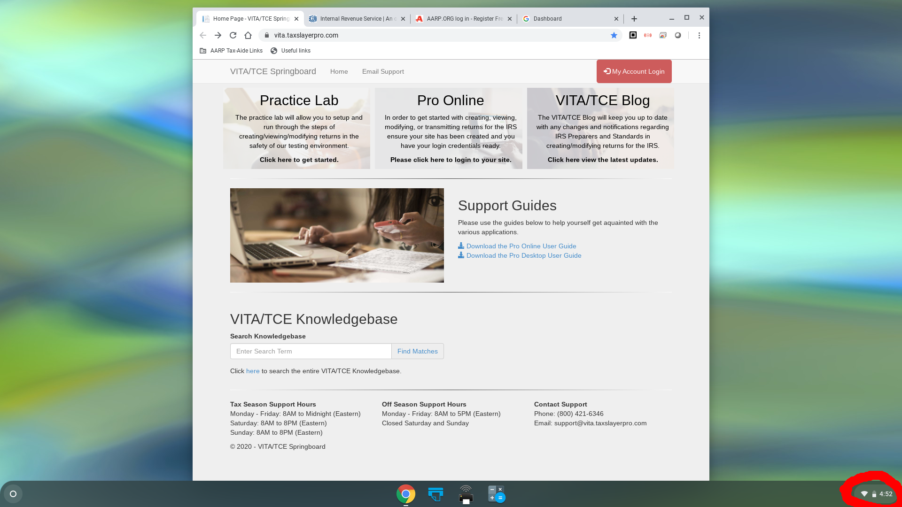
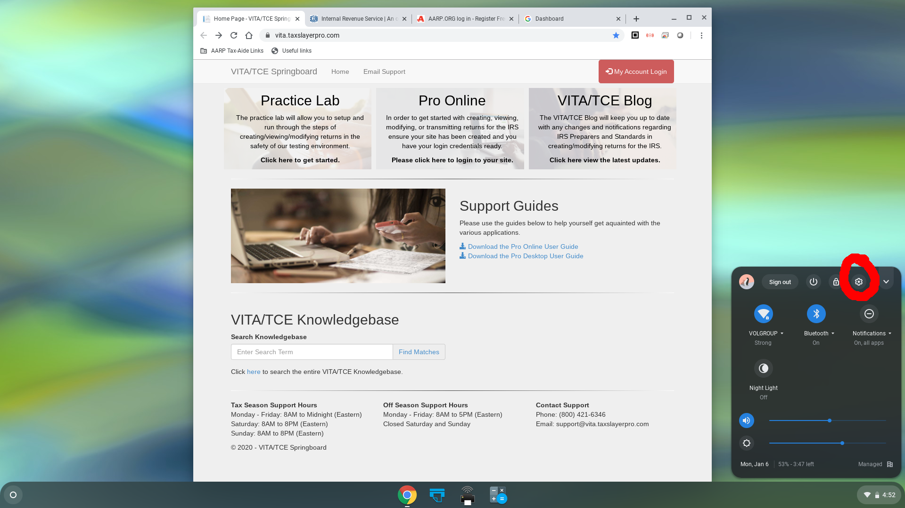
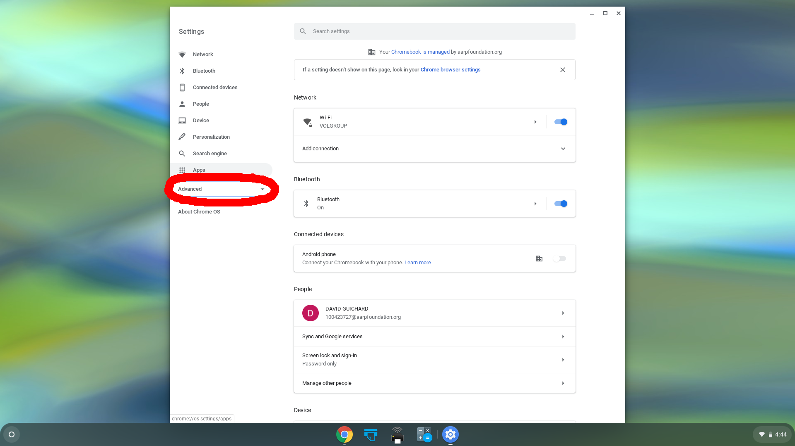
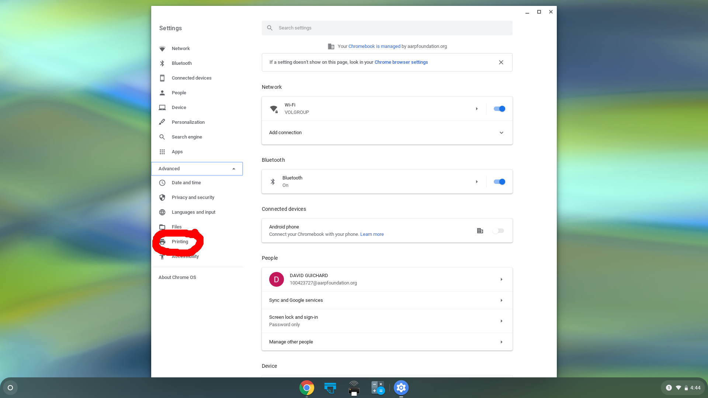
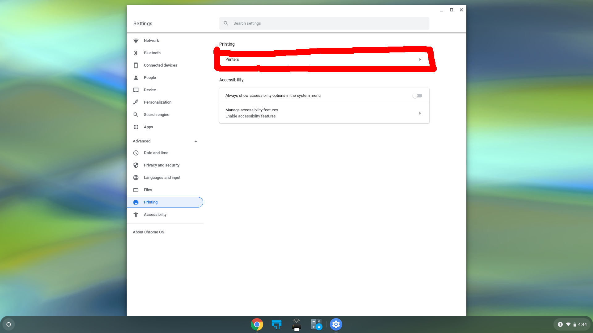
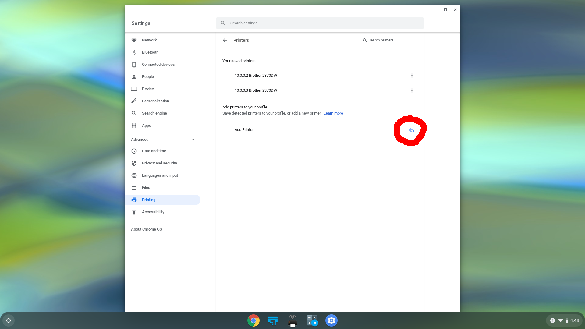
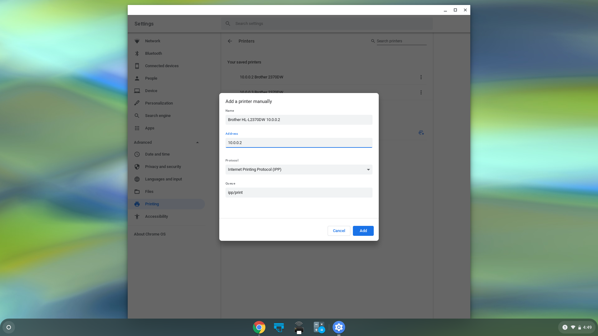
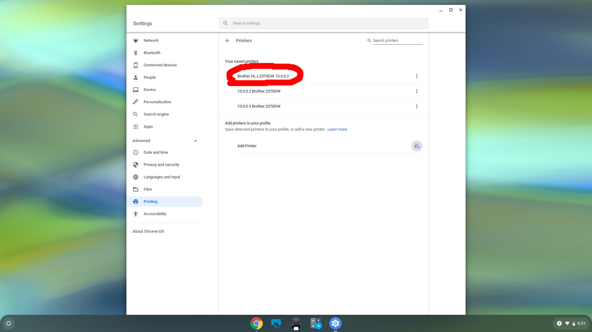

Click on the icon at the bottom right corner of the screen:
Click on the gear icon:
Click "Advanced":
Click "Printing":
Click "Printers":
Click the icon to the right of "Add Printer":
Click Fill in a name for the printer; it's a good idea to include the IP address in the name, either 10.0.0.2 or 10.0.0.3:
Click "Add":
You should see the new printer in the list.